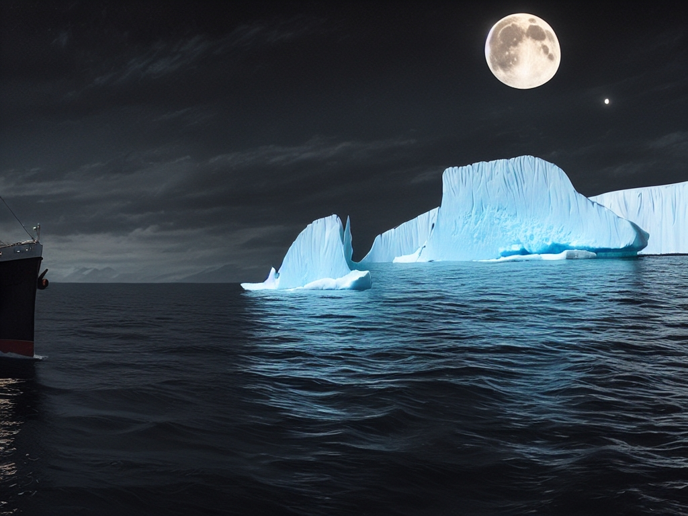

Συμβουλές για τη Χρήση της Λειτουργίας Outpaint
Η λειτουργία Outpaint στο AiCasso σας επιτρέπει να επεκτείνετε μια εικόνα προσθέτοντας νέα στοιχεία γύρω της ή επεκτείνοντας αυτά που υπάρχουν ήδη. Απλά περιγράψτε τι θέλετε και το AiCasso θα αναλάβει τα υπόλοιπα.
Πώς Λειτουργεί:
Περιγράψτε την Αλλαγή σας:
Απλά πληκτρολογήστε τι θέλετε να προσθέσετε ή να επεκτείνετε και το AiCasso θα εφαρμόσει αυτές τις αλλαγές. Μπορείτε να καθορίσετε κατευθύνσεις όπως αριστερά, δεξιά, πάνω ή κάτω, και ακόμη και λεπτομέρειες όπως η απομάκρυνση ή η κίνηση.
Παραδείγματα Επεξεργασιών:
Παράδειγμα 1: "Προσθέστε ένα παγόβουνο στα δεξιά χρησιμοποιώντας παράγοντα μετάφρασης 0.4."

Αποτέλεσμα: Το AiCasso επεκτείνει την εικόνα προς τα δεξιά και προσθέτει ένα παγόβουνο, διατηρώντας τη συνοχή με το υπάρχον τοπίο.
Παράδειγμα 2: "Απομακρύνετε, διατηρώντας τη συνοχή της σκοτεινής θάλασσας τη νύχτα."
Αποτέλεσμα: Η εικόνα απομακρύνεται, αποκαλύπτοντας περισσότερη από τη σκοτεινή θάλασσα, ενώ διατηρεί την ατμόσφαιρα της νυχτερινής σκηνής.
Επιπλέον Επιλογές
Ακολουθούν ορισμένες προαιρετικές ρυθμίσεις που μπορείτε να χρησιμοποιήσετε για να ρυθμίσετε τις επεξεργασίες σας:
- Αρνητική Προτροπή: Αν υπάρχει κάτι συγκεκριμένο που δεν θέλετε στην εικόνα, μπορείτε να το πείτε στο AiCasso εδώ. Για παράδειγμα, μπορεί να θέλετε να αποφύγετε την προσθήκη ορισμένων χρωμάτων ή αντικειμένων.
- Τύπος Κίνησης: Αυτό καθορίζει την κατεύθυνση στην οποία επεκτείνεται η εικόνα. Μπορείτε να επιλέξετε από αριστερά, δεξιά, πάνω, κάτω ή προς τα πίσω (που απομακρύνει). Για παράδειγμα, για να κινηθείτε προς τα δεξιά, θα επιλέξετε 'δεξιά'.
- Παράγοντας Μετάφρασης: Αυτό ελέγχει πόσο κινείται η εικόνα με κάθε βήμα κατά την επέκταση. Ένας υψηλότερος αριθμός κινεί την εικόνα περισσότερο, αποκαλύπτοντας περισσότερα από το νέο περιεχόμενο. Η προεπιλογή είναι 0.05, αλλά μπορείτε να το ρυθμίσετε από 0 έως 1.
- Μετάφραση Πλάτους/Ύψους ανά Βήμα: Αυτές ελέγχουν πόσο μακριά κινείται η εικόνα οριζόντια (πλάτος) ή κατακόρυφα (ύψος) με κάθε βήμα. Η προεπιλογή είναι 32 pixels ανά βήμα, αλλά μπορείτε να το ρυθμίσετε ανάλογα με το πόσο θέλετε να μετακινηθεί η εικόνα.
- Αριθμός Βημάτων Εξαγωγής ή Αποθορυβοποίησης: Αυτό καθορίζει πόσες προσαρμογές κάνει το AiCasso για να αποκτήσει την τελική εικόνα. Περισσότερα βήματα οδηγούν σε πιο ομαλό αποτέλεσμα, με προεπιλογή 20 βήματα, αλλά μπορείτε να φτάσετε έως και 50.
- Αριθμός Βημάτων Ενδιάμεσης Εξαγωγής: Αυτό ελέγχει πόσο ομαλά γίνεται η μετάβαση μεταξύ δύο κατευθύνσεων σε μια μόνο επέκταση. Η προεπιλογή είναι 60, αλλά μπορείτε να την αυξήσετε έως 120 για πιο ομαλές μεταβάσεις.
Θυμηθείτε, αυτές οι ρυθμίσεις είναι προαιρετικές. Το AiCasso έχει σχεδιαστεί για να λειτουργεί καλά μόνο με την φυσική σας περιγραφή. Μη διστάσετε να πειραματιστείτε και να δείτε τι λειτουργεί καλύτερα για την εικόνα σας!